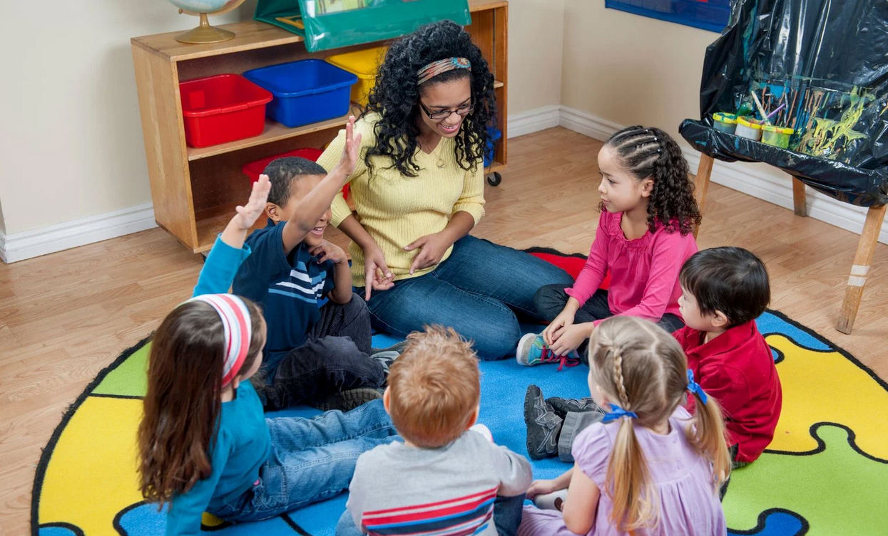

Classroom & Early Childhood Applications
Storytelling can be thoughtfully woven into everyday classroom and early childhood practice through books, materials, music, discussion, and experiences connected to the land. In these settings, storytelling is not treated as a simple teaching tool, but as a relational and meaningful approach to learning with children, grounded in Indigenous pedagogies that emphasize connection, reflection, and responsibility (Archibald, 2008; see References).
These applications demonstrate that storytelling is not only about sharing narratives, but about creating spaces where children can listen, reflect, and participate in meaning-making. Through storytelling, children engage with ideas in ways that are personal, experiential, and connected to relationships with others, the land, and the world around them.
These approaches support multiple ways of learning and expression. Children are invited to listen, observe, move, create, and share, allowing them to connect stories to their own experiences, their communities, and the land in meaningful and holistic ways.
Storytelling Through Play
Storytelling can emerge naturally through play as children use figurines, small objects, and natural materials to create and share narratives. These experiences support imagination, communication, and meaning-making, allowing children to actively construct stories rather than only listening to them.
Through play-based storytelling, children connect ideas to their own experiences, collaborate with peers, and experiment with characters, events, and settings in flexible ways. This reflects relational and experiential approaches to learning, where knowledge develops through interaction, exploration, and shared engagement.
Example: Children may use animal toys, loose parts, and fabric to build a scene, retell a familiar story, or invent a new narrative together.

Storytelling in a Circle
Storytelling often takes place in circle settings where children are invited to listen, respond, and share their ideas together. This structure supports relational learning by creating a shared space where all participants are valued and heard.
Circle-based storytelling encourages dialogue, reflection, and collaboration, allowing knowledge to emerge through interaction rather than being delivered by the educator alone. It also supports belonging and meaningful participation, as children learn with and from one another in a respectful and inclusive environment.
Example: During circle time, children may listen to a shared story, respond to open-ended questions, and contribute their own ideas, experiences, or interpretations.

Storytelling Through Books
Picture books offer meaningful entry points into storytelling by introducing children to ideas of identity, relationships, belonging, and care for the land. Through both written and visual elements, stories provide opportunities for children to interpret meaning, ask questions, and engage with different perspectives.
Rather than focusing on a single correct interpretation, educators might support open-ended discussion and reflection. Educators might invite children to make connections to their own experiences, ask questions, and consider multiple meanings within a story. This approach supports critical thinking and aligns with interpretive and relational approaches to learning (Serafini, 2013; see References).

Melanie Florence, Hawlii Pichette
This story explores gardening, growth, and relationships with the land, encouraging children to think about care, responsibility, and connection to place. It also reflects interrelated relationships between people and the natural world.

Ḵung Jaadee, Carla Joseph
This book invites children to reflect on how they are connected to people, land, and living things, supporting a sense of belonging and relational understanding.

Julie Flett
An intergenerational story that highlights friendship, change, and seasonal cycles, encouraging reflection on relationships, care, and continuity across time.

Joanne Robertson
This story introduces ideas of water protection and responsibility, encouraging children to consider their relationship with the natural world and their role within it.

David A. Robertson, Julie Flett
A gentle story that introduces themes of identity, culture, and resilience through intergenerational conversation, supporting reflection on history and lived experience.

Carole Lindstrom, Michaela Goade
This book highlights the importance of protecting water and emphasizes interconnectedness, collective responsibility, and care for the environment.
How these books can be used: These books can be shared through read-alouds, small-group conversations, and reflective discussions. Educators might invite children to ask questions, make personal connections, and respond through drawing, storytelling, or play. This supports children in developing their own interpretations while engaging with themes such as identity, relationships, belonging, and care for the land and water.